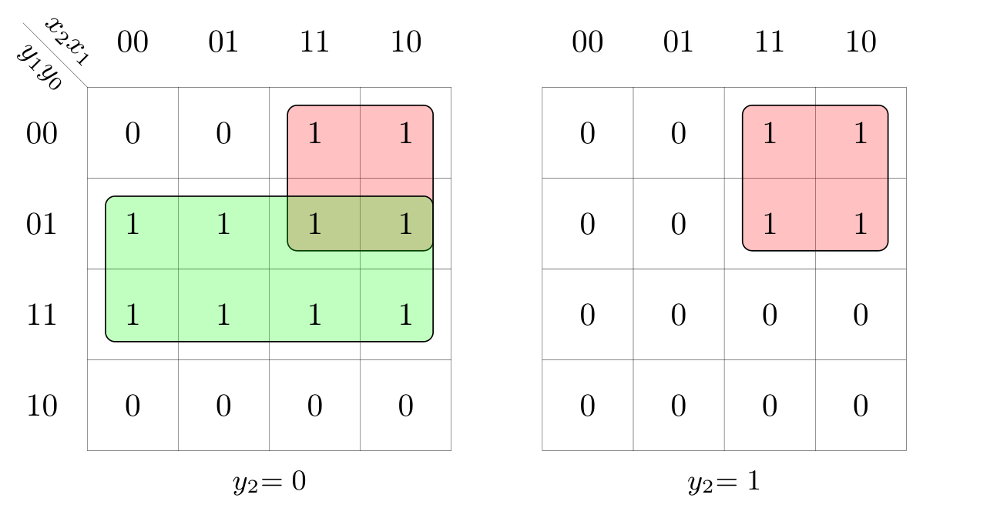
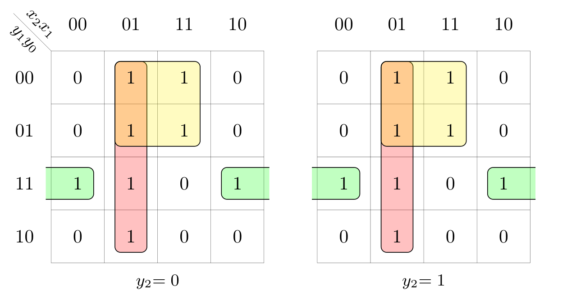
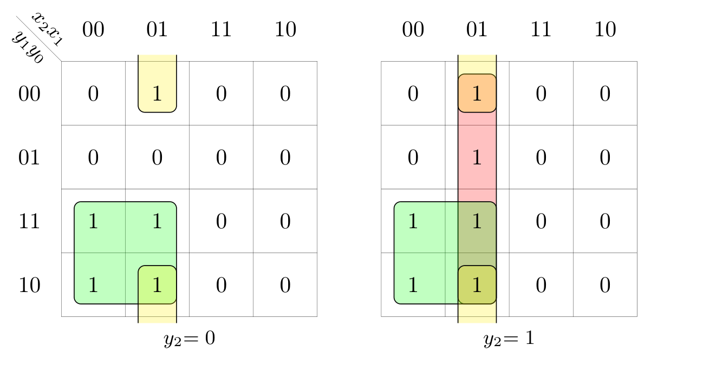
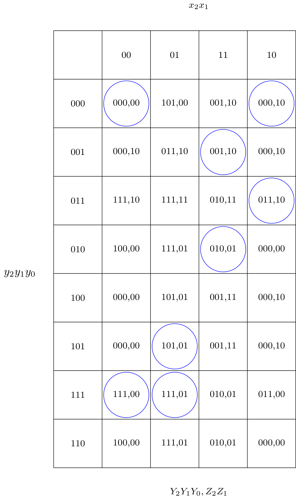
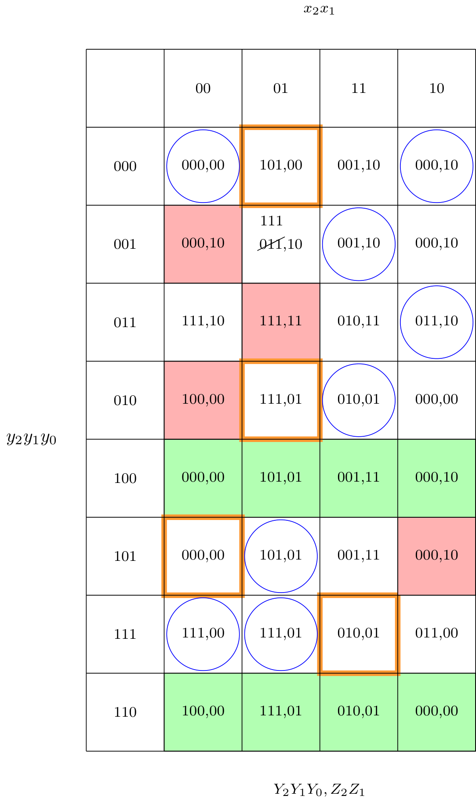

Definizione - Analisi di una RSA
Considerando una rete sequenziale asincrona data, per effettuare l'analisi (ovvero risalire al grafo degli stati) è necessario:
- riconoscere variabili in ingresso, in uscita e di stato;
- per ogni uscita e ogni stato futuro, si analizza il circuito combinatorio ad esso correlato, ricordando anche di considerare come ingressi le variabili di stato presente;
- una volta ottenute le varie espressioni combinatorie, si cerca di ricondursi ad una configurazione SP o PS in modo da essere agevoli nel passaggio successivo;
- per ogni espressione si ricostruisce la tabella della verità (utilizzando ad esempio le mappe di Karnaugh "riempite" adeguatamente considerando mintermini e maxtermini). In questo passaggio si verifica anche se sono state eliminate a priori le alee statiche con la configurazione ridondante;
- unendo le tabelle della verità si ottiene una tabella delle transizioni completamente specificata (anche se non tutte sono significativamente utili). Ogni cella che ha come destinazione il proprio stato, la si considera una cella stabile.
- per risalire al comportamento della rete è necessario modificare la tabella per ottenere la tabella di flusso originaria. Per farlo si deve:
- nelle colonne prive di stati stabili porre tutte le celle ad indifferenze in quanto sono ingressi non disponibili per la rete (in quanto se lo fossero, si avrebbero solo transizioni multiple inutili);
- per ogni riga (ovvero per ogni stato), si pongono ad indifferenza le celle non adiacenti a celle stabili (sulla riga) in quanto non si potrebbe raggiungerle modificando un solo bit di ingresso alla volta;
- si evidenzia ogni riga (ovvero ogni stato) che non contiene alcuna cella stabile (in quanto non presente nel grafo iniziale). Tali righe saranno poi da eliminare;
- si analizza ogni coppia (stato presente, stato futuro) dove la cella di "partenza" non è da eliminare. In questo momento è necessario verificare eventuali errori di progetto dovuti al non trattamento di corse critiche (è quindi necessario verificare se una corsa è critica o meno). È anche necessario sostituire eventuali transizioni multiple con lo stato di destinazione.
- nel caso si stia trattando un automa di Mealy (evidente dal fatto che su una stessa riga si hanno uscite differenti), si pone l'indifferenza sulle uscite delle celle delle transizioni in cui l'uscita varia.
- si cerca di creare una descrizione testuale che descrive il comportamento della rete.
Esempio - Analisi di una RSA
Considerando la rete descritta dalle seguenti espressioni \[ \begin{array}{ccl} Z_{1} & = & (x_{1} \cdot y_{2}) + (x_{1} \cdot y_{1}) \\ Z_{2} & = & (x_{2} \cdot \overline{y_{1}}) + ( y_{0} \cdot \overline{y_{2}}) \\ Y_{0} & = & (x_{1} \cdot \overline{x_{2}}) + (\overline{x_{1}} \cdot y_{0} \cdot y_{1}) + (x_{1} \cdot \overline{y_{1}}) \\ Y_{1} & = & (y_{0} \cdot y_{1}) + (x_{1} \cdot y_{1}) + (x_{1} \cdot \overline{x_{2}} \cdot y_{0} \cdot \overline{y_{2}}) \\ Y_{2} & = & (x_{1} \cdot \overline{x_{2}} \cdot y_{2}) + (\overline{x_{2}} \cdot y_{1}) + (x_{1} \cdot \overline{x_{2}} \cdot \overline{y_{0}}) \end{array} \] dove le variabili \( x_{?}\) indicano gli ingressi della rete, le variabili \( Z_{?}\) indicano le uscite della rete, le variabili \( y_{?}\) indicano le variabili di stato presente e le variabili \( Y_{?}\) indicano le variabili di stato futuro.
Considerando queste espressioni, risaliamo alle tabelle della verità utilizzando le mappe di Karnaugh. Si ha quindi: Una volta costruita la tabella delle transizioni, è possibile evidenziare tutte le celle di stabilità. Una volta fatto ciò, si deve controllare se tutti gli ingressi hanno almeno una cella stabile (altrimenti si può porre indifferenza su tutte le uscite e stati della colonna): in questo caso non è possibile farlo per alcuna colonna.
Una volta costruita la tabella delle transizioni, è possibile evidenziare tutte le celle di stabilità. Una volta fatto ciò, si deve controllare se tutti gli ingressi hanno almeno una cella stabile (altrimenti si può porre indifferenza su tutte le uscite e stati della colonna): in questo caso non è possibile farlo per alcuna colonna.
Evidenziamo ora ogni riga (in verde) che non contiene alcuna cella stabile e in rosso ogni cella non adiacente ad una cella stabile Ora, analizzando ogni coppia (stato presente, stato futuro), segnaliamo eventuali corse (evidenziate in arancione) ed eventuali transizioni multiple (in cui cancelliamo la transizione mettendo direttamente lo stato di destinazione). Sono quindi presenti quattro corse:
Ora, analizzando ogni coppia (stato presente, stato futuro), segnaliamo eventuali corse (evidenziate in arancione) ed eventuali transizioni multiple (in cui cancelliamo la transizione mettendo direttamente lo stato di destinazione). Sono quindi presenti quattro corse:
Sostituiamo quindi le codifiche degli stati con dei simboli:
Considerando queste espressioni, risaliamo alle tabelle della verità utilizzando le mappe di Karnaugh. Si ha quindi:
- la mappa relativa all'uscita \( Z_{1}\) (\( = x_{1} \cdot y_{2} + x_{1} \cdot y_{1}\)), ovvero

- la mappa relativa all'uscita \( Z_{2}\) (\( = x_{2} \cdot \overline{y_{1}} + y_{0} \cdot \overline{y_{2}}\)), ovvero 
- la mappa relativa all'uscita \( Y_{0}\) (\( = x_{1} \cdot \overline{x_{2}} + \overline{x_{1}} \cdot y_{0} \cdot y_{1} + x_{1} \cdot \overline{y_{1}}\)), ovvero in questo caso si può notare che non sono presenti tutti gli implicanti primi e si è quindi violato un vincolo di progetto.
- la mappa relativa all'uscita \( Y_{1}\) (\( = y_{0} \cdot y_{1} + x_{1} \cdot y_{1} + x_{1} \cdot \overline{x_{2}} \cdot y_{0} \cdot \overline{y_{2}}\)), ovvero

- la mappa relativa all'uscita \( Y_{2}\) (\( = x_{1} \cdot \overline{x_{2}} \cdot y_{2} + \overline{x_{2}} \cdot y_{1} + x_{1} \cdot \overline{x_{2}} \cdot \overline{y_{0}}\)), ovvero 

Evidenziamo ora ogni riga (in verde) che non contiene alcuna cella stabile e in rosso ogni cella non adiacente ad una cella stabile

- la corsa 000 →101. Tale corsa può risolversi nei seguenti modi:
- cambia prima il bit più significativo (000 →100) e si arriva nello stato 100 (che porterebbe allo stato 101). Sarebbe quindi corretto se non fosse per il glith sull'uscita. Questo è un errore di progettazione.
- cambia prima il bit meno significativo (000 →001) e si arriva nello stato 001 (che porterebbe allo stato 111). Questa è una corsa critica.
- la corsa 010 →111. Tale corsa può risolversi nei seguenti modi:
- cambia prima il bit più significativo (010 →110) e si arriva nello stato 100 (che porterebbe allo stato 111). È quindi una corsa non critica e anche le uscite (che rimangono costanti) non provocano alcun glitch.
- cambia prima il bit meno significativo (010 →011) e si arriva nello stato 011 (che porterebbe allo stato 111). È quindi una corsa non critica ma le uscite provocano un glitch. Questo è un errore di progettazione.
- la corsa 101 →000. Tale corsa può risolversi nei seguenti modi:
- cambia prima il bit più significativo (101 →001) e si arriva nello stato 001 (che porterebbe allo stato 000). È quindi una corsa non critica ma le uscite provocano un glitch. Questo è un errore di progettaazione.
- cambia prima il bit meno significativo (101 →100) e si arriva nello stato 100 (che porterebbe allo stato 000). È quindi una corsa non critica e anche le uscite (che rimangono costanti) non provocano alcun glitch.
- la corsa 111 →010. Tale corsa può risolversi nei seguenti modi:
- cambia prima il bit più significativo (111 →011) e si arriva nello stato 011 (che porterebbe allo stato 010). È quindi una corsa non critica ma le uscite provocano un glitch. Questo è un errore di progettaazione.
- cambia prima il bit meno significativo (111 →110) e si arriva nello stato 110 (che porterebbe allo stato 010). È quindi una corsa non critica e anche le uscite (che rimangono costanti) non provocano alcun glitch.
Ora sarebbe il momento per porre le indifferenze sull'uscita quando tra due stati non è costante. Risulta però più semplice farlo guardando il grafo.
Sostituiamo quindi le codifiche degli stati con dei simboli:
Ora è sufficiente disegnare il grafo degli stati
A questo punto, poniamo i "don't care" nelle transizioni in cui un bit dell'uscita varia, ottenendo il seguente grafo
ed è ora possibile aggiungere tali indifferenze anche nella tabella di flusso
L'analisi è quindi completa.